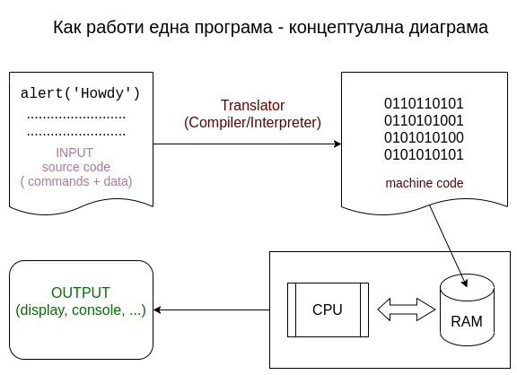

Keyboard shortcuts:
N/СпейсNext Slide
PPrevious Slide
OSlides Overview
ctrl+left clickZoom Element
If you want print version => add '
?print-pdf' at the end of slides URL (remove '#' fragment) and then print.
Like: https://wwwcourses.github.io/...CourseIntro.html?print-pdf
Created for

Iva E. Popova, 2022-2023,

Basic Programming Concepts Overview
Basic Programming Concepts Overview
How a computer program works?
{kind=link}
Video - How do computers read code?
Hello World in various programming languages
Hello World @rosettacode.orgGet familiar with Python Language
Get familiar with Python Language

picture source: @imgur.com
from If programming languages were essays...
{kind=link}
History
- Creator: Guido van Rossum
- Named after Monty Python's Flying Circus comedy show.
- Python 1.0 - January 1994
- Python 2.0 - October 2000
- Python 3.0 - December 2008
What's the use of Python?
- Python is a general-purpose programming language, used for:
- Web and Internet Development
- System administration (incl. cloud)
- Data Science, Big Data, Machine Learning
- Scientific computing
- Education
- Mobile apps development
- Embedded devices (incl. Raspberry Pi, Arduino, ...)
Python Interpreter
- Python is an interpreted language
- An interpreter is a program that directly executes the instructions in a high-level language, without converting it into machine code
- A compiler is a program that translates the source code into byte/machine code, and then execute it.
- Contemporary interpreters, like Python, use internal compiler to optimize their work.

Python implementations/distributions
Python is an open source project: Python's github
- CPython - the official Python distribution.
- PyPy - faster and compliant with Python2 and Python 3
- Jython - Python for the Java Platform.
- IronPython - the Python programming language for the .NET Framework.
- Pyjs - contains a Python-to-JavaScript compiler, an AJAX framework and more.
Setting up Python
Setting up Python (on Windows, Mac, Linux)
Install Python on Windows - HowTo
- Download the Python3 Installer:
- Python Releases for Windows
- Select "Windows installer" 32-bit or 64-bit versions - according to your system
- Installation Steps:Using Python on Windows - installation-steps @docs.python.org
- Do not forget to select "Add Python to PATH"
Install Git (and Git BASH) for Windowss
- Git for Windows provides a BASH emulation terminal used to run Git from the command line.
Install Python on Mac - more info
Install Python on Linux
- If you use Ubuntu based distribution, you can install lates Python release by:
- Open up your terminal (Ctrl + Alt + T) and write:
- For other Linux distributions check: Using Python on Linux @docs.python.org
# Update your local system's repository
sudo apt update
# Install the latest version of Python
sudo apt install python3
Verify installation:
- Open a Terminal/Command Prompt and type:
# check for python installed version: python3 --version # check for pip installed version: pip --version
Python IDEs and code editors
- Visual Studio Code
- a cross platform code editor that supports multiple programming languages.
- Free and open source ( vscode @github )
- Large and vivid community, supported by Microsoft
- Combines the simplicity of a code editor with what developers need for their core edit-build-debug cycle through many extensions.
- VS Code in the browser: vscode.dev
- JetBrains' PyCharm - The Python IDE for Professional Developers
- Sublime Text - Text Editing, Done Right
During the course, I'll be using VSCode.
Write Python in VS Code
Write Python in VS Code
VSCode intro
Useful Extensions
Useful Keyboard Shortcuts
Command Palette gives you access to all VS commands in the given context.
| Keys | Action |
|---|---|
| ctrl+shift+p | Opens Command Palette |
| ctrl+s | Save file |
| ctrl+` | Toggle Terminal/Output panel |
| ctrl+z | Undo what you've typed |
| ctrl+l | While in terminal will clear the output |
VSCode Workspace
- A Visual Studio Code "workspace" is the collection of one or more folders that are opened in a VS Code window (instance).
- The concept of a workspace enables VS Code to:
- Configure settings that only apply to a specific folder or folders but not others.
- Store and restore UI state associated with that workspace (for example, the files that are opened).
- Selectively enable or disable extensions only for that workspace.
- Persist task and debugger launch configurations that are only valid in the context of that workspace.
Prepare your Workspace
- Make a root folder for your python projects.
- Open vscode.
- Select "Add folder" and choose the folder you've made.
- In the sidebar, the "Explorer" will show your folder.
Workspace settings
- Press CTRL+SHIFT+P and type
Workspace Settings - Here you can change the default settings, as you wish in order to customize your experience with your project.
Create and execute a Python file
- Right click on the root folder in VS Code Sidebar.
- Select: "New File", enter the name:
say_hello.pyand press enter. - Write down this code (put your name in the quotes):
- Right click anywhere on the editor window and select "Run Python File in Terminal".
Note, this command will be present, only if you've been installed the extension: python by microsoft
my_name = "Iva"
print("Hello " + my_name)
Create and execute a Python file - demo
- A terminal panel should be opened in your editor showing the python script execution and its output:

Setup 'Run with Python' Task
Select Python version
ctrl+shift+p and find Python: Select interpreter
Useful videos
Useful Readings
Python design philosophy and syntax
Python design philosophy and syntax
The Zen of Python
$ python -m this
The Zen of Python, by Tim Peters
Beautiful is better than ugly.
Explicit is better than implicit.
Simple is better than complex.
Complex is better than complicated.
Flat is better than nested.
Sparse is better than dense.
Readability counts.
Special cases aren't special enough to break the rules.
Although practicality beats purity.
Errors should never pass silently.
Unless explicitly silenced.
In the face of ambiguity, refuse the temptation to guess.
There should be one-- and preferably only one --obvious way to do it.
Although that way may not be obvious at first unless you're Dutch.
Now is better than never.
Although never is often better than *right* now.
If the implementation is hard to explain, it's a bad idea.
If the implementation is easy to explain, it may be a good idea.
Namespaces are one honking great idea -- let's do more of those!
Clean syntax
- Statements are terminated by EOL ("End Of Line symbol"), not by semicolons
- Though, you can use semicolons if you wish
- Block of statements is wrapped by the same indentation, not by curly braces
- You can use spaces or tabs for indent.
- But as PEP 8 – Style Guide for Python Code suggests: "Use 4 spaces per indentation level".
- Mixing spaces with tabs can lead to errors or bugs.
Python syntax vs JavaScript syntax demo
- Both programs deal with same task: to find the sum and product of array
numbers = [1, 2, 3, 4]
product = 1
for i in numbers:
product *= i
total = sum(numbers)
print(total, product)
var numbers = [1, 2, 3, 4],
total = 0,
product = 1;
for (i = 0; i < numbers.length; i += 1) {
total += numbers[i];
product *= numbers[i];
}
console.log(total, product)
- Other examples for comparing Python vs other languages you can find: rosettacode.org
Do not mix space and tabs

That code will lead to
TabError: inconsistent use of tabs and spaces in indentation
Same indent!

That code will lead to
IndentationError: unexpected indent
Wrong indentation can cause bugs!

Can you spot the bug?